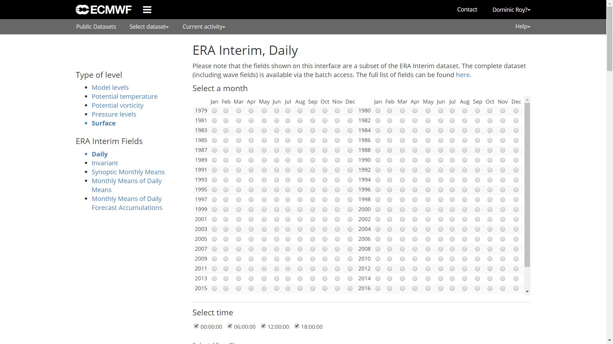
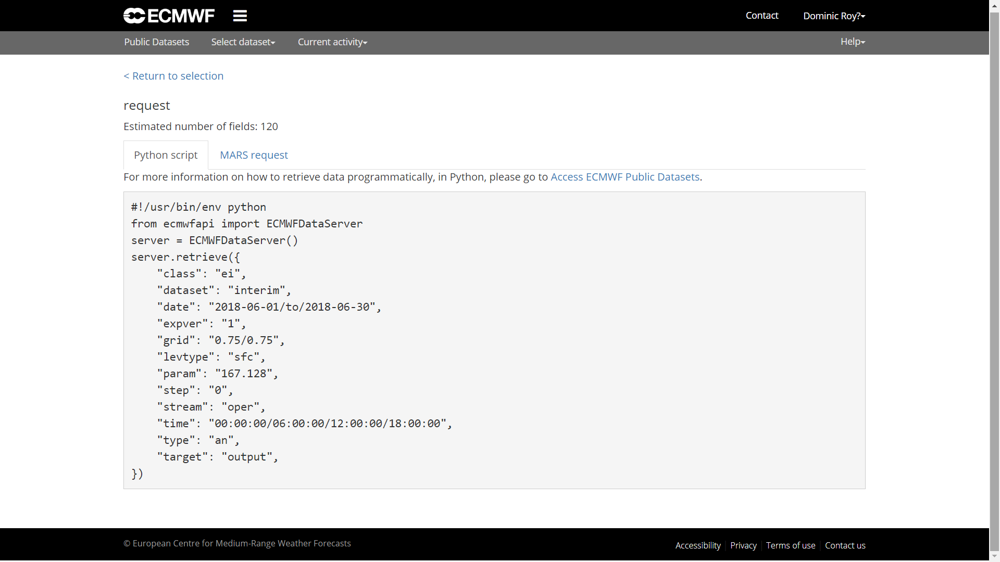

Access to climate reanalysis data from R

A friend advised me to introduce R levels as categories. An idea that I now add to each blog post. There are three levels: elementary, intermediate, and advanced. I hope it will help the reader and the R user.
1 Introduction
In this post, I will show how we can download and work directly with data from climatic reanalysis in R. These kind of datasets are a combination of forcast models and data assimilation systems, which allows us to create corrected global grids of recent history of the atmosphere, land surface, and oceans. The two most used reanalyses are NCEP-DO (Reanalysis II) from the NOAA/OAR/ESRL, an improved version of NCEP-NCAR (Reanalysis I), and ERA-Interim from the ECMWF. Since NCEP-DO is the first generation, it is recommended to use third-generation climate reanalysis, especially ERA-Interim. An overview of the current atmospheric reanalysis can be found here. First, let’s see how to access the NCEP data through an R library on CRAN that facilitates the download and handling of the data. Then we will do the same with the ERA-Interim, however, to access this last reanalysis dataset it is necessary to use python and the corresponding API of the ECMWF.
2 NCEP
To access the NCEP reanalysis it is required to install the corresponding package RNCEP. The main function is NCEP.gather( ). The resolution of the NCEP reanalysis is 2.5º X 2.5º.
2.1 Packages
#install the RNCEP, lubridate and tidyverse packages
if(!require("RNCEP")) install.packages("RNCEP")
if(!require("lubridate")) install.packages("lubridate")
if(!require("tidyverse")) install.packages("tidyverse")
if(!require("sf")) install.packages("sf")
#load the packages
library(RNCEP)
library(lubridate) #date and time manipulation
library(tidyverse) #data manipulation and visualization
library(RColorBrewer) #color schemes
library(sf) #to import a spatial object and to work with geom_sf in ggplot22.2 Data download
We will download the air temperature of the 850haPa pressure level for the year 2016. The variables and pressure levels can be found in the details of the function ?NCEP.gather. The reanalysis2 argument allows us to download both version I and version II, being by default FALSE, that is, we access reanalysis I. In all the requests we will obtain data of every 6 hours (00:00, 06:00, 12:00 and 18:00). This supposes a total of 1464 values for the year 2016.
#define the necessary arguments
month_range <- c(1,12) #period of months
year_range <- c(2016,2016) #period of years
lat_range <- c(30,60) #latitude range
lon_range <- c(-30,50) #longitude range
data <- NCEP.gather("air", #name of the variable
850, #pressure level 850hPa
month_range,year_range,
lat_range,lon_range,
return.units = TRUE,
reanalysis2=TRUE)## [1] Units of variable 'air' are degK
## [1] Units of variable 'air' are degK#dimensions
dim(data) ## [1] 13 33 1464#we find lon, lat and time with dimnames()
#date and time
date_time <- dimnames(data)[[3]]
date_time <- ymd_h(date_time)
head(date_time)## [1] "2016-01-01 00:00:00 UTC" "2016-01-01 06:00:00 UTC"
## [3] "2016-01-01 12:00:00 UTC" "2016-01-01 18:00:00 UTC"
## [5] "2016-01-02 00:00:00 UTC" "2016-01-02 06:00:00 UTC"#longitude and latitude
lat <- dimnames(data)[[1]]
lon <- dimnames(data)[[2]]
head(lon);head(lat)## [1] "-30" "-27.5" "-25" "-22.5" "-20" "-17.5"## [1] "60" "57.5" "55" "52.5" "50" "47.5"2.3 Monthly average
We see that the downloaded data is an array of three dimensions with [lat, lon, time]. As above mentioned, we extracted latitude, longitude and time. The temperature is given in Kelvin. The objective in the next section will be to show two maps comparing January and July.
#create our grouping variable
group <- month(date_time)
#estimate the average temperature by month
data_month <- aperm(
apply(
data, #our data
c(1,2), #apply to each time series 1:row, 2:column a the mean( ) function
by, #group by
group, #months
function(x)ifelse(all(is.na(x)),NA,mean(x))),
c(2,3,1)) #reorder to get an array like the original
dim(data_month) #850haPa temperature per month January to December## [1] 13 33 122.4 Visualization
Once we got here, we can visualize the 850hPa temperature of January and July with ggplot2. In this example, I use geom_sf( ) from the library sf, which makes the work easier to visualize spatial objects in ggplot (in the near future I will make a post about sf and ggplot). In the dimension of latitude and longitude we saw that it only indicates a value for each row and column. But we need the coordinates of all the cells in the matrix. To create all combinations between two variables we can use the expand.grid( ) function.
#first we create all the combinations of lon-lat
lonlat <- expand.grid(lon=lon,lat=lat)
#as lonlat was a row/column name, it is character, that's why we convert it into numeric
lonlat <- apply(lonlat,2,as.numeric)
#lon and lat are not in the order as we expect
#row=lon; column=lat
data_month <- aperm(data_month,c(2,1,3))
#subtract 273.15K to convert K to ºC.
df <- data.frame(lonlat,
Ta01=as.vector(data_month[,,1])-273.15,
Ta07=as.vector(data_month[,,7])-273.15)Before we can make the map with ggplot2, we have to adapt the table. The shapefile with the countries limits can be downloaded here.
#convert the wide table into a long one
df <- gather(df,month,Ta,Ta01:Ta07)%>%
mutate(month=factor(month,unique(month),c("Jan","Jul")))
#import the countries limits
limit <- st_read("CNTR_RG_03M_2014.shp")## Reading layer `CNTR_RG_03M_2014' from data source
## `E:\GitHub\blog_update_2021\content\en\post\2018-09-15-access-to-climate-reanalysis-data-from-r\CNTR_RG_03M_2014.shp'
## using driver `ESRI Shapefile'
## Simple feature collection with 256 features and 3 fields
## Geometry type: MULTIPOLYGON
## Dimension: XY
## Bounding box: xmin: -180 ymin: -90 xmax: 180 ymax: 83.66068
## Geodetic CRS: ETRS89#color scheme
colbr <- brewer.pal(11,"RdBu")
ggplot(df)+
geom_tile(aes(lon,lat,fill=Ta))+ #temperature data
geom_sf(data=limit,fill=NA,size=.5)+ #limits
scale_fill_gradientn(colours=rev(colbr))+
coord_sf(ylim=c(30,60),xlim=c(-30,50))+
scale_x_continuous(breaks=seq(-30,50,10),expand=c(0,0))+
scale_y_continuous(breaks=seq(30,60,5),expand=c(0,0))+
labs(x="",y="",fill="Ta 850hPa (ºC)")+
facet_grid(month~.)+ #plot panels by month
theme_bw()
3 ERA-Interim
The ECMWF offers access to its public databases from a pyhton-API. It is required to be registered on the ECMWF website. You can register here. When dealing with another programming language, in R we have to use an interface between both which allows the library reticulate. We must also have installed a pyhton distribution (version 2.x or 3.x). In the case of Windows we can use anaconda.
ecmwfr has been published that facilitates accessing the Copernicus and ECMWF APIs. The major advantage is that it is not necessary to install python. More details here. I wrote a more updated version in 2022.
3.1 Installation
if(!require("reticulate")) install.packages("reticulate")
if(!require("ncdf4")) install.packages("ncdf4") #to manage netCDF format
#load packages
library(reticulate)
library(ncdf4)Once we have installed anaconda and the package reticulate, we can install the library python ecmwfapi. We can carry out the installation, or through the Windows CMD using the command conda install -c conda-forge ecmwf-api-client, or with the R function py_install( ) from the reticulate package. The same function allows us to install any python library from R.
#install the python ECMWF API
py_install("ecmwf-api-client")3.2 Connection and download with the ECMWF API
In order to access the API, it is required to create a file with the user’s information.
The “.ecmwfapirc” file must contain the following information:
{
"url" : "https://api.ecmwf.int/v1",
"key" : "XXXXXXXXXXXXXXXXXXXXXX",
"email" : "john.smith@example.com"
}The key can be obtained with the user account here.
The file can be created with the Windows notebook.
- We create a document “ecmwfapirc.txt”.
- Rename this file to “.ecmwfapirc.”
The last point disappears automatically. Then we save this file in “C:/USERNAME/.ecmwfapirc” or “C:/USERNAME/Documents/.ecmwfapirc”.
#import the python library ecmwfapi
ecmwf <- import('ecmwfapi')
#for this step there must exist the file .ecmwfapirc
server = ecmwf$ECMWFDataServer() #start the connectionOne we get here, how do we create a query? The easiest thing is to go to the website of ECMWF, where we choose the database, in this case ERA-Interim surface, to create a script with all the necessary data. More details about the syntax can be found here. When we proceed on the website, we only have to click on “View MARS Request”. This step takes us to the script in python.


With the syntax of the script from the MARS Request, we can create the query in R.
#we create the query
query <-r_to_py(list(
class='ei',
dataset= "interim", #dataset
date= "2017-01-01/to/2017-12-31", #time period
expver= "1",
grid= "0.125/0.125", #resolution
levtype="sfc",
param= "167.128", # air temperature (2m)
area="45/-10/30/5", #N/W/S/E
step= "0",
stream="oper",
time="00:00:00/06:00:00/12:00:00/18:00:00", #hours
type="an",
format= "netcdf", #format
target='ta2017.nc' #file name
))
#query to get the ncdf
server$retrieve(query)The result is a netCDF file that we can process with the library ncdf4.
3.3 Processing ncdf
In the next section, the objective will be the extraction of a time serie from the closest coordinate to a given one. We will use the coordinates of Madrid (40.418889, -3.691944).
#load packages
library(sf)
library(ncdf4)
library(tidyverse)#open the connection with the ncdf file
nc <- nc_open("ta2017.nc")
#extract lon and lat
lat <- ncvar_get(nc,'latitude')
lon <- ncvar_get(nc,'longitude')
dim(lat);dim(lon)
#extract the time
t <- ncvar_get(nc, "time")
#time unit: hours since 1900-01-01
ncatt_get(nc,'time')
#convert the hours into date + hour
#as_datetime() function of the lubridate package needs seconds
timestamp <- as_datetime(c(t*60*60),origin="1900-01-01")
#import the data
data <- ncvar_get(nc,"t2m")
#close the conection with the ncdf file
nc_close(nc)In this next section we use the sf package, which is replacing the well known sp and rgdal packages.
#create all the combinations of lon-lat
lonlat <- expand.grid(lon=lon,lat=lat)
#we must convert the coordinates in a spatial object sf
#we also indicate the coordinate system in EPSG code
coord <- st_as_sf(lonlat,coords=c("lon","lat"))%>%
st_set_crs(4326)
#we do the same with our coordinate of Madrid
psj <- st_point(c(-3.691944,40.418889))%>%
st_sfc()%>%
st_set_crs(4326)
#plot all points
plot(st_geometry(coord))
plot(psj,add=TRUE,pch = 3, col = 'red')In the next steps we calculate the distance of our reference point to all the grid points. Then we look for the one with less distance.
#add the distance to the points
coord <- mutate(coord,dist=st_distance(coord,psj))
#create a distance matrix with the same dimensions as our data
dist_mat <- matrix(coord$dist,dim(data)[-3])
#the arrayInd function is useful to obtain the row and column indexes
mat_index <- as.vector(arrayInd(which.min(dist_mat), dim(dist_mat)))
#we extract the time serie and change the unit from K to ºC
#we convert the time in date + hour
df <- data.frame(ta=data[mat_index[1],mat_index[2],],time=timestamp)%>%
mutate(ta=ta-273.15,time=ymd_hms(time))Finally, we visualize our time series.
ggplot(df,
aes(time,ta))+
geom_line()+
labs(y="Temperature (ºC)",
x="")+
theme_bw()4 Update for accessing ERA-5
Recently the new reanalysis ERA-5 with single level or pressure level was made available to users. It is the fifth generation of the European Center for Medium-Range Weather Forecasts (ECMWF) and accessible through a new Copernicus API. The ERA-5 reanalysis has a temporary coverage from 1950 to the present at a horizontal resolution of 30km worldwide, with 137 levels from the surface to a height of 80km. An important difference with respect to the previous ERA-Interim is the temporal resolution with hourly data.
The access changes to the Climate Data Store (CDS) infrastructure with its own API. It is possible to download directly from the web or using the Python API in a similar way to the one already presented in this post. However, there are slight differences which I will explain below.
- It is necessary to have a Copernicus CDS account link
- Again, you need a account key link
- There are changes in the Python library and in some arguments of the query.
#load libraries
library(sf)
library(ncdf4)
library(tidyverse)
library(reticulate)
#install the CDS API
conda_install("r-reticulate","cdsapi", pip=TRUE)To be able to access the API, a requirement is to create a file with the user’s information.
The “.cdsapirc” file must contain the following information:
url: https://cds.climate.copernicus.eu/api/v2
key: {uid}:{api-key}
The key can be obtained with the user account in the User profile.
The file can be created in the same way as it has been explained for ERA-Interim.
#import python CDS-API
cdsapi <- import('cdsapi')
#for this step there must exist the file .cdsapirc
server = cdsapi$Client() #start the connectionWith the syntax of the script from the Show API request single level, we can create the query in R.
#we create the query
query <- r_to_py(list(
variable= "2m_temperature",
product_type= "reanalysis",
year= "2018",
month= "07", #formato: "01","01", etc.
day= str_pad(1:31,2,"left","0"),
time= str_c(0:23,"00",sep=":")%>%str_pad(5,"left","0"),
format= "netcdf",
area = "45/-20/35/5" # North, West, South, East
))
#query to get the ncdf
server$retrieve("reanalysis-era5-single-levels",
query,
"era5_ta_2018.nc")It is possible that the first time an error message is received, given that the required terms and conditions have not yet been accepted. Simply, the indicated link should be followed.
Error in py_call_impl(callable, dots$args, dots$keywords) :
Exception: Client has not agreed to the required terms and conditions.. To access this resource, you first need to accept the termsof 'Licence to Use Copernicus Products' at https://cds.climate.copernicus.eu/cdsapp/#!/terms/licence-to-use-copernicus-productsFrom here we can follow the same steps as with ERA-Interim.
#open the connection with the file
nc <- nc_open("era5_ta_2018.nc")
#extract lon, lat
lat <- ncvar_get(nc,'latitude')
lon <- ncvar_get(nc,'longitude')
dim(lat);dim(lon)
#extract time
t <- ncvar_get(nc, "time")
#time unit: hours from 1900-01-01
ncatt_get(nc,'time')
#we convert the hours into date+time
#as_datetime from lubridate needs seconds
timestamp <- as_datetime(c(t*60*60),origin="1900-01-01")
#temperatures in K from july 2018
head(timestamp)
#import temperature data
data <- ncvar_get(nc,"t2m")
#plot 2018-07-01
filled.contour(data[,,1])
#time serie plot for a pixel
plot(data.frame(date=timestamp,
ta=data[1,5,]),
type="l")
#close the conection with the ncdf file
nc_close(nc)